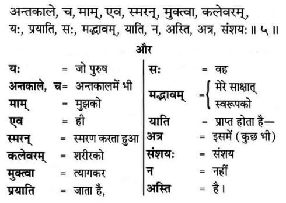

Is there some other Supreme God that Shri Krishan Ji is talking about in Shrimad Bhagavad Gita?

Is there some other Supreme God that Shri Krishan Ji is talking about in Shrimad Bhagavad Gita?
The popular belief amongst devotee society is that Shri Krishan Ji has given the knowledge of Gita and he himself is the Supreme God. Whether Shri Krishan Ji spoke Gita or not, is a matter of a separate debate. We will here
address the question whether Shri Krishan Ji talks about some other Supreme God or not, and that too with cogent evidence from Bhagavad Gita.
There are many verses in Bhagavad Gita where Krishan Ji is talking about some other God, for instance 18:62, 18.66. However we will for the purpose of this article concentrate on Chapter 8 as it talks very clearly about some other
Supreme God.
See below the verses from Chapter 8 verse 5 - 10. These images are from Bhagavad Gita by Gita Press Gorakhpur.
Bhagavad Gita Adhyay 8, Shlok 5
Transliteration: Jo purush antkaal mein bhi mujhko hi smarn karta hua shareer ko tyag kar jata hai, vah mere sakshat roop ko prapt hota hai. Isme kuch bhi sanshay nahin hai. Purport: Krishan Ji is saying that he who remembers me at the terminal moment, achieves me. There is no doubt about it.
To know more, visit this link